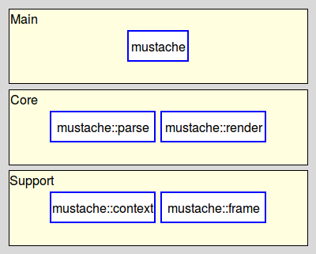
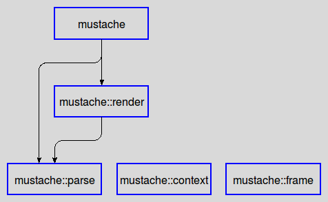

mustache-introduction - Mustache - Introduction to the project
Welcome to the Mustache project for Tcl, written by Andreas Kupries.
It provides a set of five related Tcl packages for the parsing and rendering of mustache-style logic-less templates, plus an application for easy command-line access to the functionality.
For availability please read Mustache - How To Get The Sources.
All packages belong to one of two layers, as shown below:

Note that:
Packages marked with a dashed border are private.
Packages marked with an unbroken blue border are fully public.
The dependencies between the packages are very straight-forward:

Mustache - Introduction to the project
Both the package(s) and this documentation will undoubtedly contain bugs and other problems. Please report such at Mustache Tracker.
Please also report any ideas you may have for enhancements of either package(s) and/or documentation.
Copyright © 2019-2021 Andreas Kupries
Copyright © 2019-2021 Documentation, Andreas Kupries